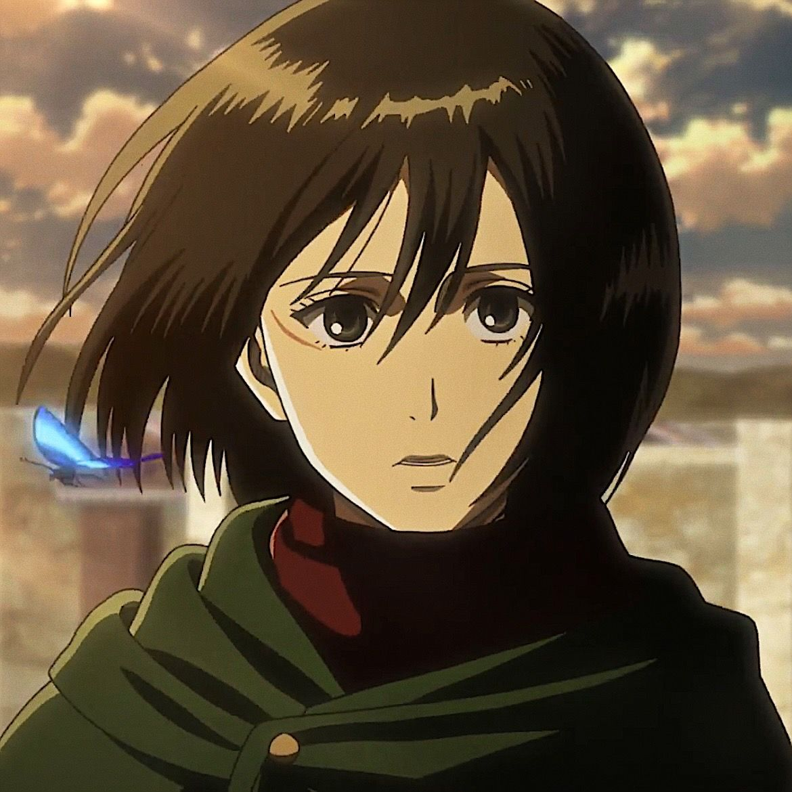

Introduction to Attack on Titan
Attack on Titan is a critically acclaimed anime series that takes place in a world where humanity is on the brink of extinction. In this dark and dystopian setting, gigantic humanoid creatures known as Titans roam the land and devour humans without mercy.
The story follows Eren Yeager, a young boy who witnesses the destruction caused by the Titans and vows to eradicate them. Alongside his friends, Mikasa Ackerman and Armin Arlert, Eren joins the ranks of the Survey Corps, a special military unit dedicated to fighting against the Titans and uncovering the truth about their existence.
Throughout the series, viewers are taken on a thrilling journey filled with intense battles, shocking revelations, and complex character development. Attack on Titan explores themes of survival, sacrifice, and the human desire for freedom in the face of overwhelming adversity.
With its gripping storyline, stunning animation, and a cast of memorable characters, Attack on Titan has captivated audiences worldwide. The series has received widespread acclaim for its compelling narrative, emotional depth, and thought-provoking exploration of moral dilemmas.
Featured Characters
-

Eren Yeager
-

Mikasa Ackerman
-

Levi Ackerman
-

Armin Arlert
-
Hange Zoë
-
Reiner Braun
-
Kenny Ackerman
-
Annie Leonhart
Join the Attack on Titan Community
Engage with fellow fans and stay up to date with the latest news, discussions, and fan theories about Attack on Titan. Connect with fans from around the world and share your love for this incredible anime series.
Follow us on social media, join online forums, and participate in fan events to connect with like-minded fans and be a part of the Attack on Titan community. Together, we can celebrate this extraordinary anime and its impact on the world of entertainment.